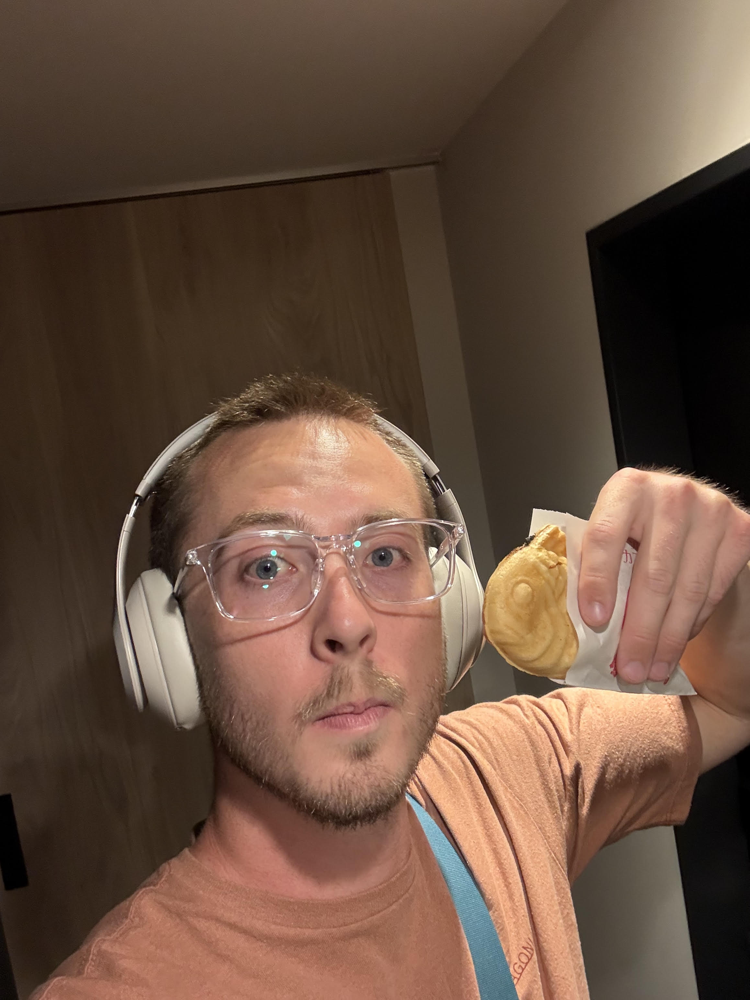
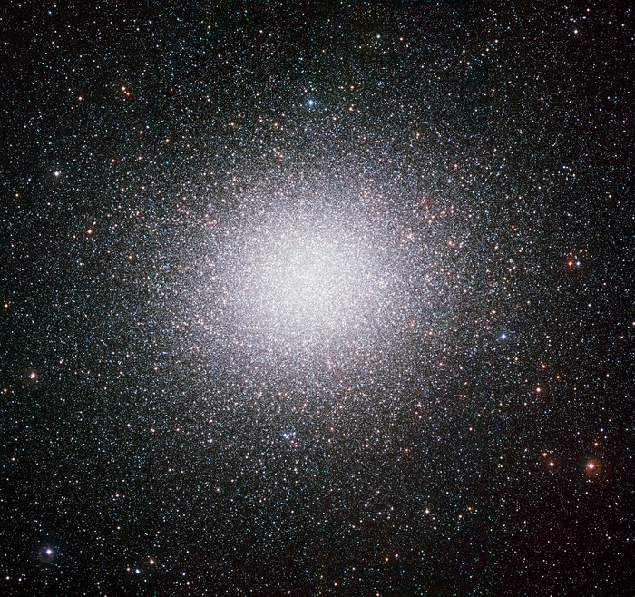

M.S. Computing (AI) · University of Utah
> click the tent, cabin, or telescope
> click the sun to watch it set

I'm currently a graduate student at the University of Utah (graduating December 2026!), studying Computing with a specialization in Artificial Intelligence, and a Machine Learning Operations (MLOps) Engineering Intern at Intermountain Health.
Previously, I completed degrees in Computer Science and Physics at the University of Utah (B.S. in Computer Science, B.S. in Physics, May 2025).
Across computer science and physics I have many interests, the broad scope being artificial intelligence, machine learning and deep learning, and astrophysics. For astrophysics, I typically am most excited about (finding) black holes, and have been searching for them in Omega Centauri for some time now (see my research tab)!
While I have specific problem interests, I overall just enjoy solving difficult problems and learning new things.
Outside of academics, I love to climb, ski, bike, fly fish, do yoga, and make coffee!
GPA: 4.0/4.0 (so far, as of writing I still have some time left!)
Courses: Multimodal LLM Agents, Interpretability of LLMs, Manage Data for and with ML, Natural Language Processing, Artificial Intelligence, Neuro-Symbolic Modeling, Computer Vision, Human Computer Interaction, and Sustainable Computing.
GPA: 3.9/4.0
Relevant coursework: Deep Learning, Machine Learning, Algorithms, Foundations of Data Analysis, Algorithms and Data Structures, Databases
GPA: 3.9/4.0
Relevant coursework: Intro to Cosmology, Extragalactic Astrophysics, Quantum Mechanics, Differential Equations, Linear Algebra, Complex Variables
GPA: 3.9/4.0

My research focuses on the detection of stellar mass black holes (black holes with a mass similar to our Sun) in a globular cluster named Omega Centauri. To find these black holes, I use a method of detection known as microlensing. Microlensing occurs when a massive object passes in front of a distant light source, bending the light from the source and causing it to appear brighter for a short period of time. My work uses archival data from the Hubble Space Telescope to identify these microlensing events. By studying the light curves of stars within Omega Centauri, I can infer the presence of black holes in the cluster.
This project is advised by Dr. Anil Seth and Dr. Max Häberle.
The paper has been submitted to the Monthly Notices of the Royal Astronomical Society (MNRAS) and is currently in review. However, you can check it out in the meantime on the arxiv here!